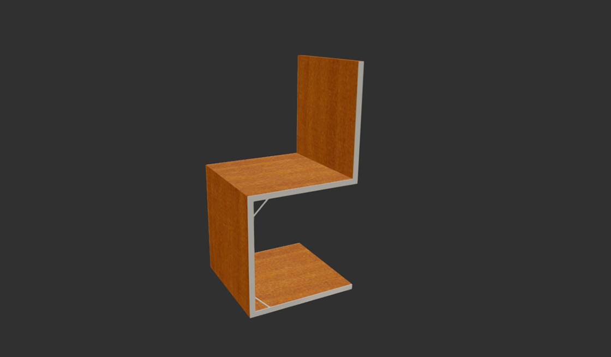

F & S
The F & S stands for Foldable and Stackable. Its origin is a former design for an art piece on the wall, that later became the Onepiece/Osa. We wanted to design one element, which can be divided into three pieces (table and two chairs) and is attached to a wall. Due to issues with stability we transformed the idea to the F & S. It consists of a table, which is attached to a wall, and several chairs. The table can be folded up and the chairs can be stacked, so that we create more space and have the opportunity to store something in the stacked chairs. This design can fit into a lot of environments like restaurants, cafés, hotels and even space-saving homes.
Alternative designs

Chair design